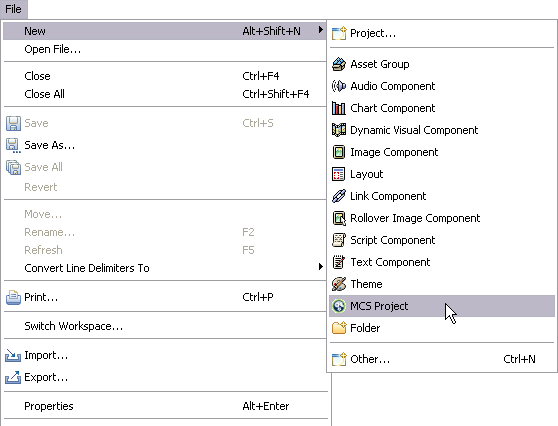

In this module you will learn how to create a new MCS project. It will hold all the resources, policies, and XDIME 2 files required by the web application.

Congratulations, you've just created your first MCS project!
By default all the policies are stored in the WebContent/mcs-policies directory created by the MCS Project wizard. Our layouts and theme policies will be placed in that location. However, we will create an additional folder in the mcs-policies directory, called 'images', to store all image component policies.
The MCS makes use of several Eclipse workbench views. One of them is a Navigator view that allows you to view and select files in the project.
Go to the MCS Navigator view and expand your project. It should now show the following structure.